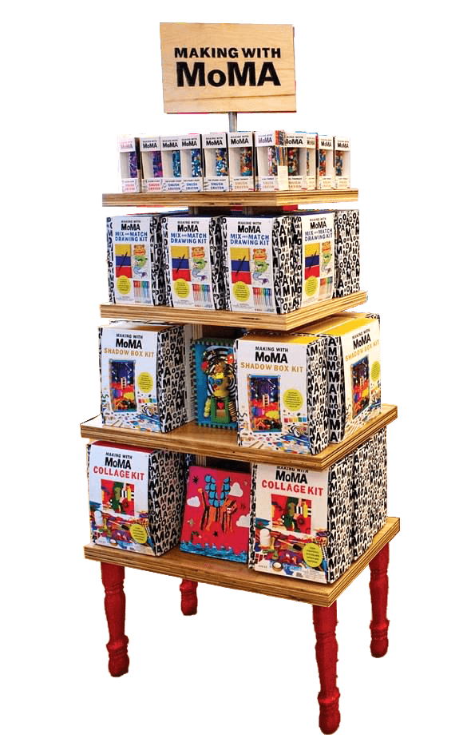
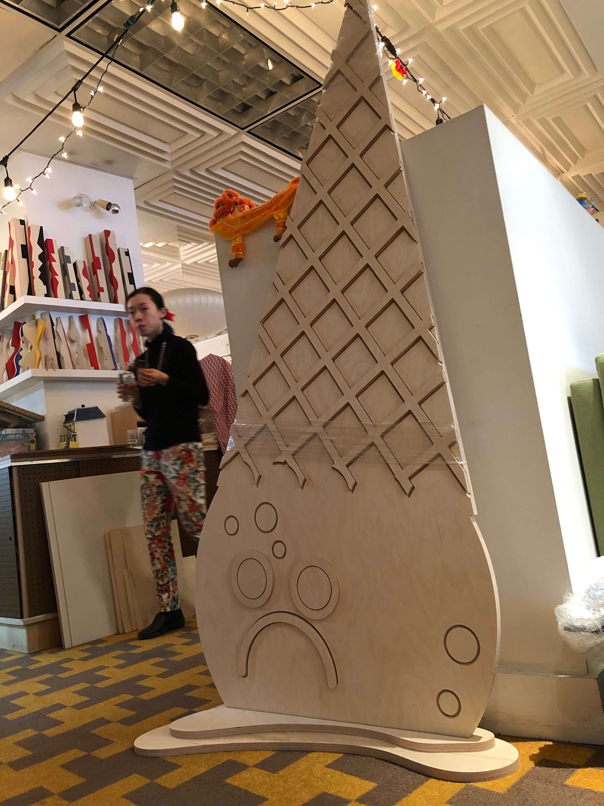
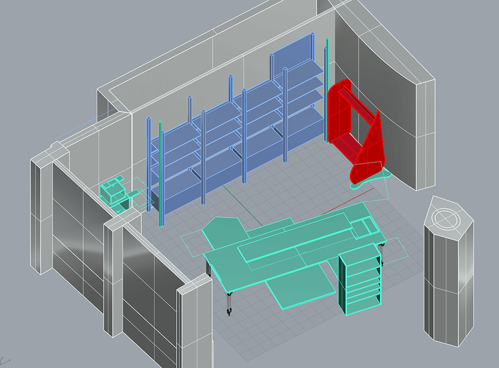

Kid Made Modern × MoMA Pop-Up

In Spring 2019, Kid Made Modern and the MoMA Design Store organized a pop-up event in New York City. The pop-up, which ran from March 28, 2019 to May 20, 2019 celebrated Making with MoMA — a Kid Made Modern and MoMA’s collaboration inspired by artistic processes in history. In addition to helping with the design of the Making with MoMA product, I collaborated with a team of makers to build and design the pop-up store.




Process


With dimensions gathered on-site, my colleague and I created a floor plan of interesting geometries without sacrificing accessibility. I also designed fantastical fixtures inspired by Patrick Hruby’s illustrations to create an engaging space for younger patrons.
